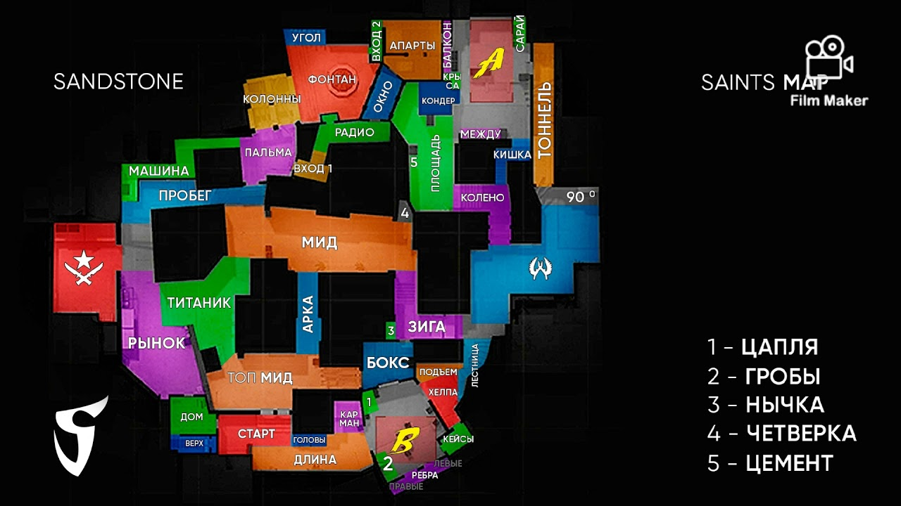

Sandstone — карта в Standoff 2, на которой играются режимы «Аркада», «Эскалация», «Закладка бомбы», «Соревновательный» и «Союзники». Отличается асимметричным строением и большим количеством входов на пленты: на одном их три, а на другом — четыре.
Примечательно, что половина территории Sandstone была выделена в отдельную карту Sand Yards, которая используется для «Битвы снайперов», «Гонки вооружений» и «Командного боя».
 Тимейты
Информация карт
Тимейты
Информация карт